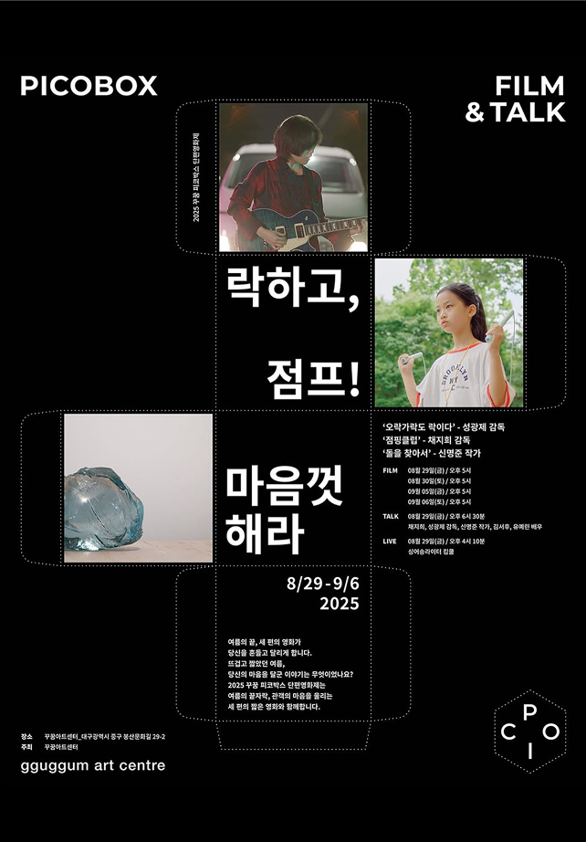

락하고, 점프! 마음껏 해라
PICOBOX FILM & TALK
2025.08.29 ~2026.09.06
< 꾸꿈아트센터에서 열리는 한여름 영화제 '피코박스 단편영화제'>
- 채지희 감독
《점핑클럽》
- 성광제 감독
《오락가락도 락이다》
- 신명준 작가
《돌을 찾아서》
[ GV (관객과의 대화): Talk After Take ]
일시: 2025년 08월 29일(금) 오후 6시 15분
참석: 채지희 감독, 성광제 감독, 신명준 작가, 김서후 배우, 유예린 배우
진행: 꾸꿈아트센터 2층 아트스페이스
감독과 배우가 들려주는 영화 제작 비하인드 시간. 인상 깊었던 장면과 촬영 과정, 가장 어려웠던 순간과 가장 잊고 싶지 않은 에피소드, 그리고 앞으로의 계획까지 직접 들을 수 있는 자리입니다.
[ Live Opening Set ]
싱어송라이터 킴쿨 KEEMCOOL
어쿠스틱 사운드를 기반으로 고유의 음악 세계를 확장해 나가고 있는 싱어송라이터
ABOUT PICOBOX
'피코박스(PICOBOX)'는 이탈리아어 'Piccolo(작은, 어린)'에서 영감을 받아 만들어졌습니다. '세상에서 가장 작은 상자(어둠상자)'에서 피어나는 찬란한 빛, 그것이 피코박스가 전하는 이야기입니다.
